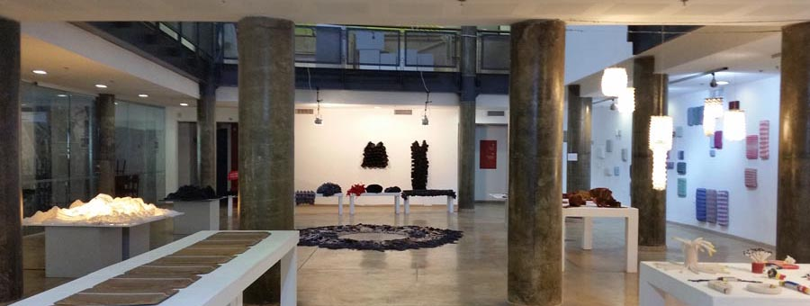

Art in Israel. The "Textile in 3D" Exhibition
An exhibition of student work called "Textile in 3D" was held at the School of Design in Haifa (the school's official name is "The NB Haifa School of Design").
Photos: Ephraim Kalish

The fashion designer Lesya Repetivskaya shared her impressions of the spring exhibition. Read also Lesya Repetivskaya's article "Into Our Own Wardrobe: Reflections on Fashion".
A video from the exhibition "Textile in 3D":
"Now is the most beautiful time of year in Israel. The jacaranda is in bloom, and soon the delonix (flame tree) will flower. This exhibition can serve as a prelude to all this beauty.
The Land of Israel has always been rich in talented people. You can see it for yourself at this exhibition of student work. It woke up my excitement. I immediately wanted to understand how it was all made. And it is made wonderfully and with talent. Happy, I think, are the teachers who can teach the present generation something old and at the same time ever new. Everything we know from the history of textiles has been done here the way it should be done today, at the level of new technologies.


The very fact that I am here already gives me inspiration. Because any contact with talent, which is fragile by definition, is already happiness. And whatever you are going through in life, it is enough to look at some beauty, natural or made by human hands: behind both stands Divine inspiration."


See also another video with Lesya Repetivskaya, "The Vector of Israeli Fashion":